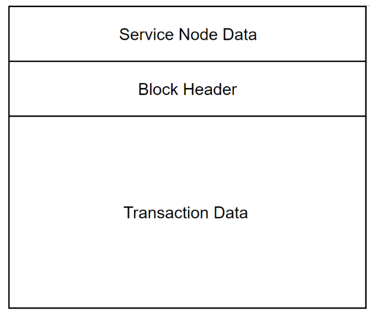
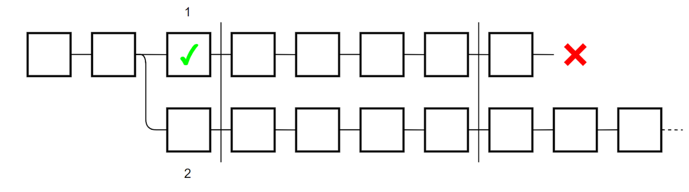

Service Node Checkpointing¶
Metadata
LIP Number: 3
Title: Service Node Checkpointing [Foundation Vote]
Author/s: Kee Jefferys, Jason Rhinelander
Status: Final
Type: (Core)
Created: date (2018-11-30)
1 Simple Summary¶
Consensus via Proof of Work in Loki presents a significant risk of 51% attack. To mitigate this risk and increase security, Loki should leverage the existing Service Node network and integrate Service Nodes more closely into our consensus mechanism. This proposal, if passed, would allow Service Nodes to validate the existing PoW chain to prevent reorganisations of the blockchain greater than N blocks.
2 Abstract¶
Loki currently only uses Proof of Work to come to consensus on the state of the blockchain. Although the introduction of Service Nodes has removed a portion of the block reward from miners, Service Nodes do not create, verify or submit blocks to the network. Proof of Work is a well studied system for forming decentralised consensus, but a number of issues persist, especially for coins with lower market capitalisations. These issues include but are not limited to: Roaming hashrate attacks, Monopooling, and rented hashrate attacks. This proposal presents novel attacks on Loki’s Proof of Work consensus system and proposes Service Node block validation to prevent this.
3 Motivation¶
Proof of Work’s intrinsic value in a blockchain system is derived from its ability to fairly choose who can update the blockchain. Each block requires proof that the block creator has spent some resource that is external to the blockchain itself. Although Proof of Work does well to satisfy the above claims, it also has some major drawbacks.
The most pressing for Loki is that of a 51% attack, which would seek to perform a double spend by producing a chain with more proof of work than a canonical chain. Typically when referring to 51% attacks they are strictly theoretical, either requiring unreasonable amounts of money or large amounts of economically disincentivised social collusion. However there are a number of factors which make lower market cap coins like Loki particularly susceptible to 51% attacks.
The first being the ‘roaming hashrate phenomenon,’ which refers to the propensity for miners to quickly move hashrate across networks seeking the most profitable coins, this can create large fluctuations in hashrate which are difficult to control for.
Secondly, there are ‘rented hash power attacks,’ a relatively new phenomena which have seen wide proliferation through services like NiceHash and MiningRigRentals. These services allow users to temporarily rent hashing power for a number of popular hashing algorithms[1][2]. Rented hash attacks become a significant threat when the hashrate available on these services exceeds the hashrate of the minable coin.
Finally there is ‘monopooling,’ which is a complex problem where a large number of miners tend to mine only to the largest pool regardless of the fee structure of that pool. This is often a symptom of the roaming hashrate phoneomenon. If a monopool reaches more than 51% of the network hashrate then it becomes a risk factor for general 51% attacks occurring.
These attacks will now be discussed in further detail.
3.1 PoW Disadvantages¶
3.1.1 Roaming Hashrate Phenomenon¶
To understand this phenomenon, it is best to imagine a portion of the “global GPU hashrate” as liquid in nature. This hashrate moves between coins based on their short term profitability. This means coins which have a spike in price or a large reduction in difficulty are often mined for short periods of time by this type of miner.
The roaming hashrate phenomenon has increased in scale with the adoption of websites which allow miners to easily analyse the profitability of every minable coin live depending on their hardware, and make recommendations on the most profitable coin to mine[3][4][5]. Additionally, developers have created open source utilities which allow a miner’s hashrate to automatically switch between different coins depending on profitability, entirely without user interaction[6].

Figure 1: CryptonightProfitSwitcher CLI utility that automatically targets mining rigs to most profitable CryptoNight coin.
Although these miners are not necessarily intending to negatively impact coins, they can further exacerbate deep cycles of hashrate fluctuation when they switch between networks. These deep cycles can be exploited by attackers, either by controlling pools that these miners automatically switch to, or using rented hashing power attacks when profit seeking miners switch off creating a temporary drop in the network hashrate. If done programmatically, the roaming hashrate phenomenon can also contribute to the monopooling phenomenon.
3.1.2 Rented Hashrate Attacks¶
Although the phenomenon of the roaming hashrate would generally be considered as benign and lacking malicious intent, rented hashrate attacks often carry a much greater negative stigma. There have been numerous examples of attackers using rented hashrate to perform a wide variety of attacks, including timestamp forging, difficulty jamming and double spend attacks[7][8][9].

Figure 2 : example of a hashrate attack causing difficulty jamming on the Karbowanec network
The proliferation of services like NiceHash and MiningRigRentals make the renting of hashrate easy to even the most basic of attacker. Although the same 51% attacks have always been possible, attackers previously would either have to permanently purchase hardware totaling 51% of the network hashrate, or convince miners to use their malicious pool. These options typically involved large setup costs in hardware, time, or social efforts (and often all three).
Miners can now spontaneously set up a private pool with modified malicious software, then rent the needed hashrate to perform a double spend with relative ease. Although this specific issue has not directly affected Loki, there have been notable attacks on a number of Cryptonote coins. This attack becomes easier as the hashing algorithm becomes more available and liquid on NiceHash relative to a coin network’s actual hashrate.
This comes as a particular concern for Loki as we have repeatedly lowered rewards for miners which has reduced the network hashrate and led to a significant amount of hashrate moving to more profitable coins. Any plans to increase rewards for Service Nodes further may continue this effect, further reducing the Loki hashrate. This trend is illustrated in figure 3, which shows a trend of growing convergence between Nicehash available hashing power and Loki’s global hashrate.

Figure 3: Available NiceHash CryptoNight heavy hashing power versus the Global hashing power of at Loki.
3.1.3 Monopooling¶
We will use the term ‘monopooling,’ which refers to single pools which dominate more than 51% of the hashrate of a coin’s network. This is a phenomenon which mostly affects small, GPU-mineable coins. The monopools themselves are not necessarily malicious, although provided the right incentive from an attacker they can exert their hashrate over a coin network. Monopooling seems to be the culmination of many of the above phenomenon, being particularly endemic in coins that have issues with roaming hashrate.
If we consider a miner who switches between profitable coins using the CryptoNight hashing algorithm, they might switch networks multiple times a day. The most profitable strategy for this miner is not always to seek the pool with the lowest fees, but to join a pool which will will produce more blocks and yield a higher payout in the short time that they are mining. This reduces the variance during the time that they do mine, ensuring that hashes are seldom wasted. If these pools reach over 50% of the hashrate they can also offer advantages to miners. For example in the event of a hard fork, the community and developers of a coin may seek to legitimise the longest chain as the the legitimate chain meaning profits are unlikely to be lost in a split.
On a number of coins this leads to large monopools. By measuring the percentage hashrate of the largest pools of 18 small GPU-mineable coins the results indicated that on average these coins had a single pool that represented 53% of their hashrate.

Figure 4: Shows the % network hashrate of the largest pool on a number of GPU mineable coins as of 01/12/2018
Although these pools are primarily benign, they still pose a threat due to the control they have over the network. It would be feasible for an attacker to bribe or hack a pool operator to perform a double spend.
4 Specification¶
4.1 Block Validation¶
As a result of the above problems, I propose that Loki utilise Service Nodes to validate the existing Proof of Work chain after N blocks.
4.2 Reorganisation Limits¶
‘Checkpoints’ are one way to prevent reorganisations greater than N blocks. Adding a checkpoint to a blockchain dictates that once the checkpoint is reached, the normal rules of Proof of Work are ignored. This means that when a checkpoint is set, block reorganisations past the checkpoint are invalid, even if the proposed candidate for reorganisation contains a longer chain with higher difficulty targets.
The other, more naive approach is to simply cap reorganisations greater than P blocks. However there are serious problems with this approach, if an attacker can produce a chain of length P+1 and submit it to a different edge of the network as the non attacking chain is being checkpointed, then the network will diverge and will be unable to merge back into a single chain, effectively permanently forking the chain. This attack could, for example, deliberately target an exchange to put the exchange on a fork controlled by the attacker but distinct from the main network until manual maintenance is undertaken by the exchange to re-sync to the proper network chain. This kind of attack is prevented by Service Node checkpointing, as the attacker would need their two chains to be signed by the quorum to create a conflict.
4.3 Checkpointing Rules¶
Already implemented in Loki are Service Node quorums, which dictate that each block 10 random Service Nodes are selected based on the hash of the 10th previous block to assess the uptime proofs of other Service Nodes. To validate the blockchain every N blocks a new class of Service Node quorums should be selected and be given an additional task, which is to add a checkpoint to the blockchain each time a period N is reached.
A Service Node checkpoint should consist of a blockhash, a block height and the signature of a super majority (66%) of the Service Nodes in the relevant quorum. To avoid miners colluding to ignore checkpoints and reorg past the hard limits, the checkpoint should not be included as a transaction in the blockchain. Rather, the checkpoint data should be appended to the ‘top’ of the block after the fact. All data inside of blocks will maintain immutability, but clients will append the Service Node data outside of the hashed data.

Figure 5: example of a Checkpointed block
Choosing Chains¶
A Service Node quorum is prevented from checkpointing more than one chain at any time, so behaviour must be written for what should occur when the quorum disagrees on which chain should be checkpointed. First, before any decision is made, each node should share their candidate checkpoint chain with all other nodes in the quorum.
Some conditions should be established beyond normal block validation:
- The proposed chain must be built from one of the last two checkpoints C1 or C2;
- Nodes shall not accept more than (N*3) - 1 blocks since the last checkpoint (Where N is the reorg limit);
- If two chains of proof of work are produced with the same cumulative difficulty, Service Nodes should choose the chain based on the lowest hamming distance of the chain tip’s blockhash to 0, and;
- The latest checkpoint C3 can invalidate two checkpoints back to C1.
Once Service Nodes internally agree on the correct chain, they should all produce a signed copy of the block which should then be submitted to the network. If valid (containing a super majority of Service Node signatures) then the extra Service Node data should be appended to the relevant checkpointed block in all client databases.
Why Have More Than One Checkpoint?¶
Adding additional checkpoints to the chain before finalisation adds a high degree of redundancy: in the rare case that a quorum is unable to come to consensus and misses a checkpoint, the chain can continue uninterrupted. The network will then rely on either of the next two quorums which can sign and continue the chain.
Service Node Data¶
As discussed, each checkpoint requires that data be appended to the top of blocks. This data should include a couple of things:
- The blockhash of one of the last two checkpointed blocks;
- The Service Node data hash of one of the last two checkpointed blocks, and;
- A super majority of the selected quorum signatures singing the blockhash of the new block to be checkpointed.
Practical Issues with Checkpointing¶
When checkpointing or setting reorganisation limits, the question must always be asked: can the blockchain self repair, and in what situation could the blockchain become stuck or permanently forked?
If we imagine a protocol bug that causes the blockchain to stop after a reorganisation point or an invalid block is checkpointed, then there is no way to continue the chain, since the longer chain can never reorganise past the first checkpoint on chain 1 as shown in figure 6.

Figure 6: Blockchain with unrepairable checkpoints, N = 4
The only way to overcome this issue is to allow Service Nodes to simultaneously sign multiple chains. Clients must measure the dominant chain as the one with the most Service Node signatures. However, this reintroduces the risk of a double spend as Service Nodes can now authorise duplicate chains outside of N.

Figure 7: Blockchain as measured by signature weight
This leads us to the conclusion that chain reparability and double spend protection are mutually exclusive, since any transactions that were accepted in chain 1 (figure 7) could be reversed in chain 2.
4.4 Proposed Checkpointing in Loki¶
After assessing the above issues I believe Loki should value double spend protection over absolute chain repariablity for a couple of reasons:
-
Chain reparability is already a problem present in Loki’s current PoW. If a chain of blocks is mined and then there is a bug encountered, then that bug is likely to cause an issue for all miners, in this case the Loki team or a third party would have to release new software which would allow miners and clients to sync past the faulty block. This would be the same scenario if an invalid block was to be checkpointed. Thus the introduction of checkpoints doesn’t significantly impact the potential consequences of a bug that causes a chain pause.
-
An active double spend on the Loki network is likely to cause more damage to the ecosystem than a temporary chain pause. Double spends can shake confidence and erode the trust of users and merchants which accept and exchange Loki, a chain pause may be a lower impact event, since no funds are lost and merchants/exchanges can resume normally after the pause.
4.5 Rewards and Consequences¶
This LIP does not seek to increase the Service Node block reward, however it would add additional conditions to a Service Node receiving its normal portion of the block rewards. The primary things we want to prevent Service Nodes from doing are:
- Checkpointing more than one chain;
- Checkpointing a chain that defies the consensus of the Service Node quorum, and;
- Failing to sign any chain despite being in a selected Service Node quorum.
The first and second rules can be easily detected by allowing Service Nodes to submit any Service Node’s signature as evidence for a deregistration transaction if the signature conflicts with an existing onchain checkpoint.
Rule 3 can be solved by investigating each checkpoint for all Service Node signatures. Because Service Node quorum selection is deterministic, if any checkpoint is missing a Service Node signature more than once, the next quorum should have the ability to vote that non-voting Service Node off the network through a deregistration transaction.
4.6 Setting N¶
N is the depth of the chain before checkpointing occurs. The appropriate N should consider the propensity of natural reorganisations in the Loki blockchain, which happen to occur at a rate of approximately 20 per 10,000 blocks and at an average reorg height of 1.3 blocks. We should also consider the time it will take for a Service Node to actually checkpoint the chain. Currently, processing votes for deregistration takes approximately 1-2 blocks. Taking this into account I propose we set N = 4. In the future we should consider lowering this time if we have good reason to do so.
4.7 DDoS Protection¶
Because Service Node quorums are deterministically selected before checkpointing blocks and Service Node IP addresses are publicly stored on a DHT in Lokinet, it is important to consider an attacker who would seek to disrupt consensus communications. Without protections an attacker could carry out a DDoS attack as Service Nodes were checkpointing the chain in an attempt to disrupt communications and prevent the chain from successfully being checkpointed. Because a super majority of quorum signatures is required to sign a block and the quorum size is 20, the attack would only need to prevent communication of 18 nodes over the course of two consecutive checkpoints to freeze the blockchain.
The novel protection for this attack is Service Nodes having the ability to whitelist other nodes inside of their own active quorum when Service Nodes detects an attack. Practically speaking, Service Nodes would turn on this protection automatically when the previous quorum has failed to sign a block. This method allows nodes to communicate and come to consensus on the correct chain to sign, without accepting connections from unknown IP addresses potentially attempting DDoS attacks. Once finished checkpointing the quorum should again regain normal functionality.
4.8 Considerations for Merchants and Exchanges¶
An RPC call should be added to the Loki daemon to indicate the state of the current chain’s checkpoints. This RPC call will indicate the height of the last four blocks which were checkpointed. Merchants can with an extremely high degree of certainty accept any chain with more than two checkpoints and with a high degree of certainty accept a chain that has received a single checkpoint from a Service Node quorum. Any block deeper than 12 blocks in the chain that has more than three checkpoints should then be considered final and cannot be reorganised.
If two checkpoints have been missed in a row, this RPC call should indicate that there may be a serious error on the network and the merchant/exchange should disable withdrawals deposits temporarily while investigating the state of the chain.
Backwards Capability¶
The Switch¶
This proposal is not backwards compatible and will require a hard fork to enact. As stated, this change introduces a significant alteration to the way we will measure consensus on the Loki chain. Before making this change we should thoroughly discuss the potential consequences and recognise opposing opinions.
Implementation¶
This LIP will be opened for public discussion prior to a Foundation vote. If the vote is successful, the code will be written and submitted as a pull request which will be open to community review. These developments shall be linked here as they occur.
LIP-3 Has been approved by the Loki Foundation, we will be moving forward with progress over the coming months, progress will be reflected in our weekly dev updates
References¶
- "NiceHash." https://www.nicehash.com/.
- "Mining Rig Rentals." https://www.miningrigrentals.com/.
- "CryptUnit." https://www.cryptunit.com/.
- "WhatToMine." https://whattomine.com/.
- "Comparing mining profitability of CryptoNight coins." https://minecryptonight.net/.
- "GitHub - cryptoprofitswitcher/CryptonightProfitSwitcher: Extensible ...." https://github.com/cryptoprofitswitcher/CryptonightProfitSwitcher.
- "Let's Do the Time Warp Again: The Verge Hack, Part Deux." 5 Jun. 2018, https://blog.theabacus.io/lets-do-the-time-warp-again-the-verge-hack-part-deux-c6396ab36ecb.
- "GRAFT Network Major Update 1.1.2 at Block 64445 - Graft Blockchain." 17 Apr. 2018, https://www.graft.network/2018/04/17/graft-network-node-update-1-1-2-block-64445/.
- "Double Spend Attacks on Exchanges - Announcements and Site ...." 18 May. 2018, https://forum.bitcoingold.org/t/double-spend-attacks-on-exchanges/1362.